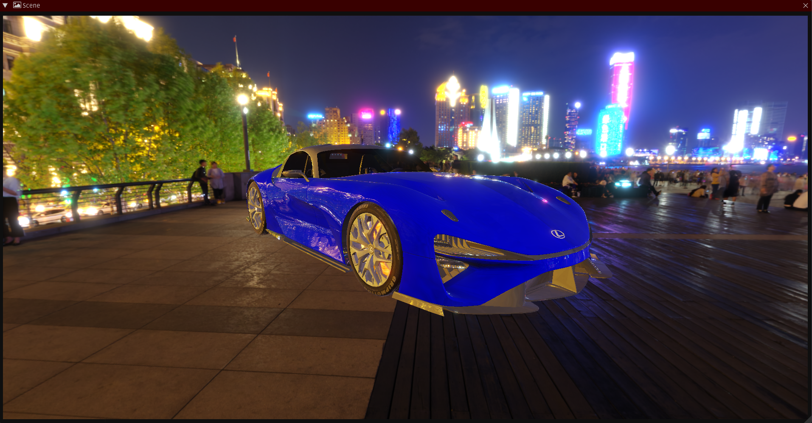
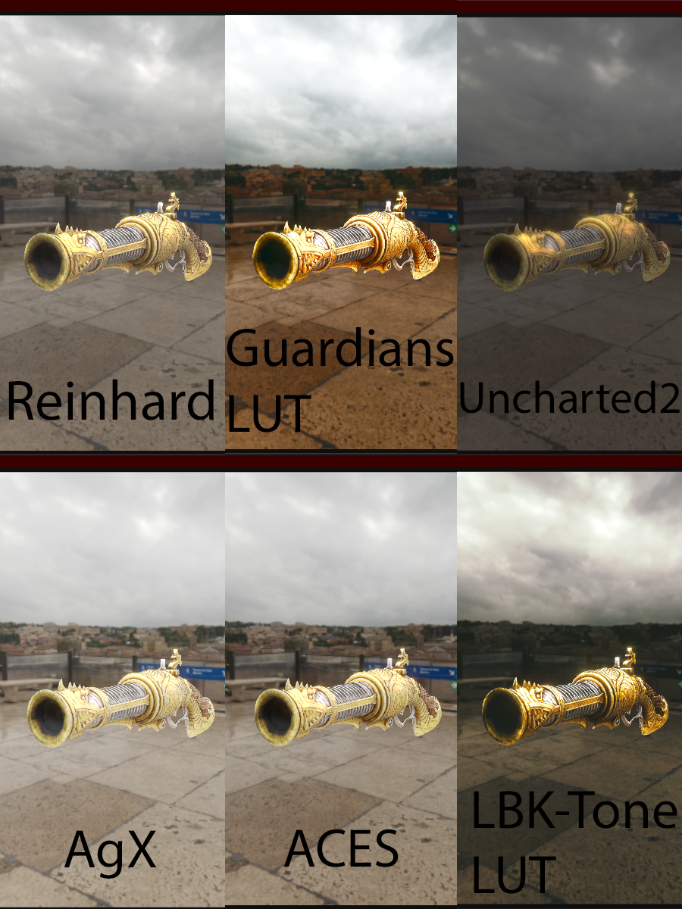
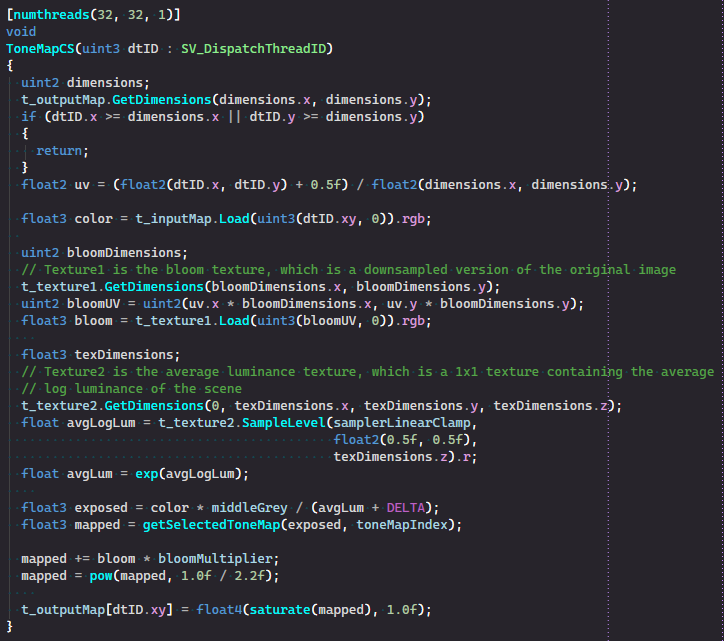
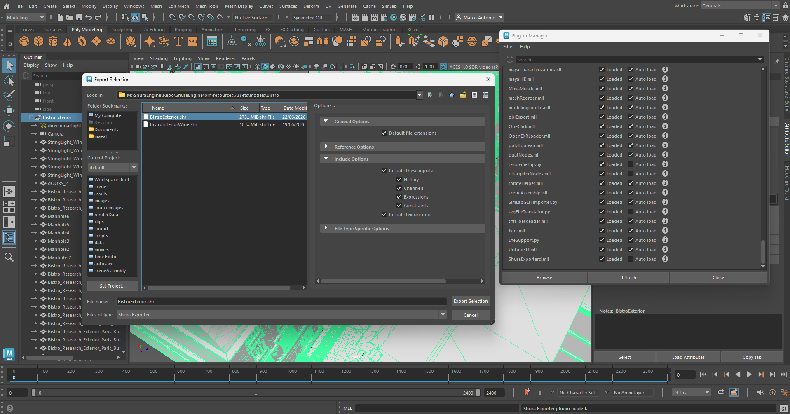
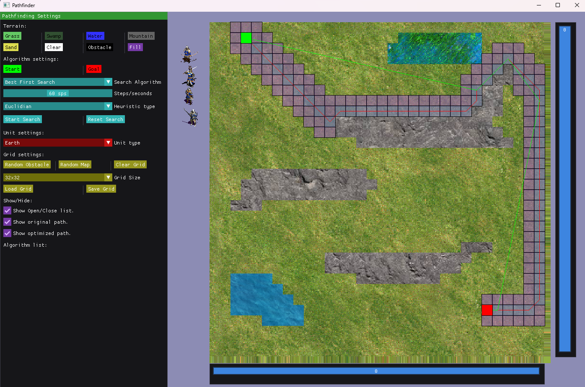
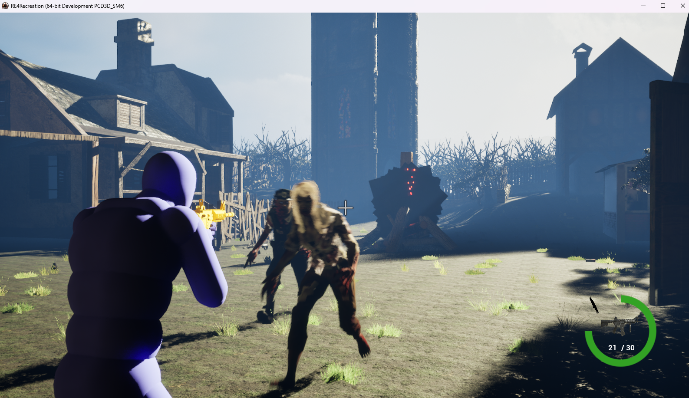
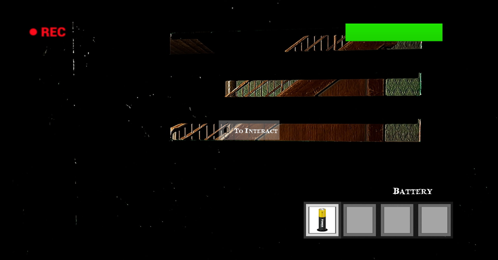
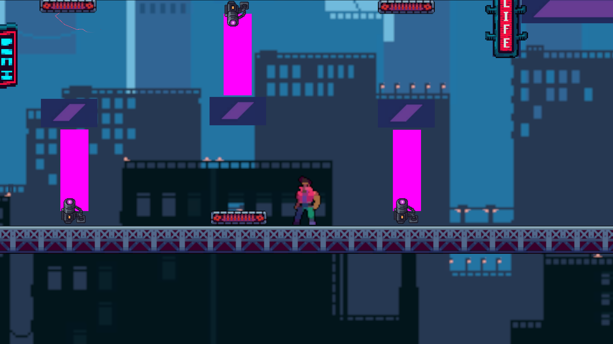

I specialize in game engine development, real-time rendering, and graphics programming.
My experience includes building a custom game engine in C++, implementing rendering systems such as PBR, HDR rendering, tone mapping, image-based lighting, shadow mapping, post-processing effects, and compute shader workflows.
I have also developed content creation tools, including a Maya exporter plugin, development with Nvidia Omniverse and a custom C++-like compiler built using the .NET framework.
In addition to engine development, I have created gameplay and technical prototypes in Unreal Engine using both Blueprints and C++, and I have experience developing projects with Unity.
Technologies and tools I use to build engines, render real-time graphics, and develop software.
3+ years
PBR, IBL, HDR, SSAO
C++, C#, HLSL, GLSL
Shura Engine (Custom), Unreal Engine, Unity
Maya SDK, .NET, DirectX 11, OpenGL

A custom game engine developed in C++ featuring modern rendering techniques, asset pipelines, editor tooling, and extensible engine architecture.
Demonstration of the rendering pipeline including PBR materials, HDR rendering, image-based lighting, shadow mapping, bloom, tone mapping operators, and compute shader post-processing effects.
Implemented multiple tone mapping operators including Reinhard, ACES, AgX, Uncharted 2, and LUT-based workflows using color grading cubemaps to support HDR rendering pipelines.

Developed GPU compute shader workflows for post-processing effects and image manipulation. The example below shows a separable blur implementation executed entirely on the GPU.

Developed a Maya exporter plugin to generate a custom optimized asset format for the engine.
The pipeline significantly reduces loading times by serializing geometry into a runtime-friendly format.
Loaded in 0.9 seconds

An RTS pathfinding project developed in C++ using SFML, implementing and comparing multiple graph search algorithms for unit navigation.
The project supports Best-First Search, Depth-First Search, Breadth-First Search, Dijkstra's algorithm, and A*, allowing different approaches to navigation and pathfinding to be evaluated in a real-time environment.

Gameplay and technical prototypes developed using Unreal Engine and Unity, exploring gameplay systems, player interaction, and engine workflows.

Technical and gameplay prototype developed using Unreal Engine, combining C++ and Blueprints.

Prototype focused on gameplay systems and player interaction, implemented using C++ and Blueprints.

Gameplay prototype developed in Unity, exploring player mechanics and real-time gameplay systems.
Open to relocation and remote opportunities worldwide.